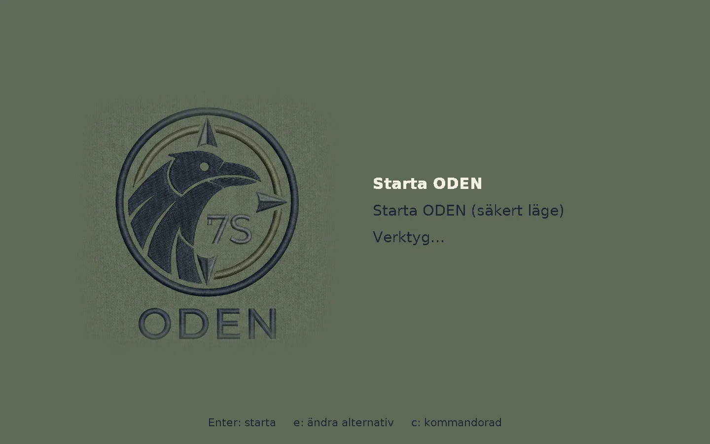
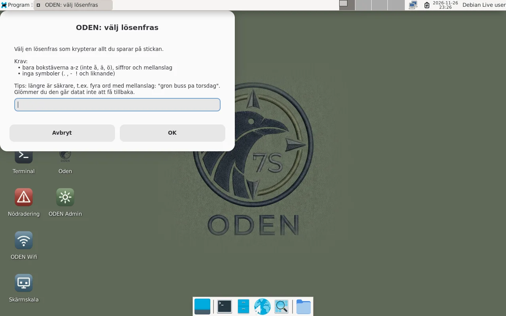
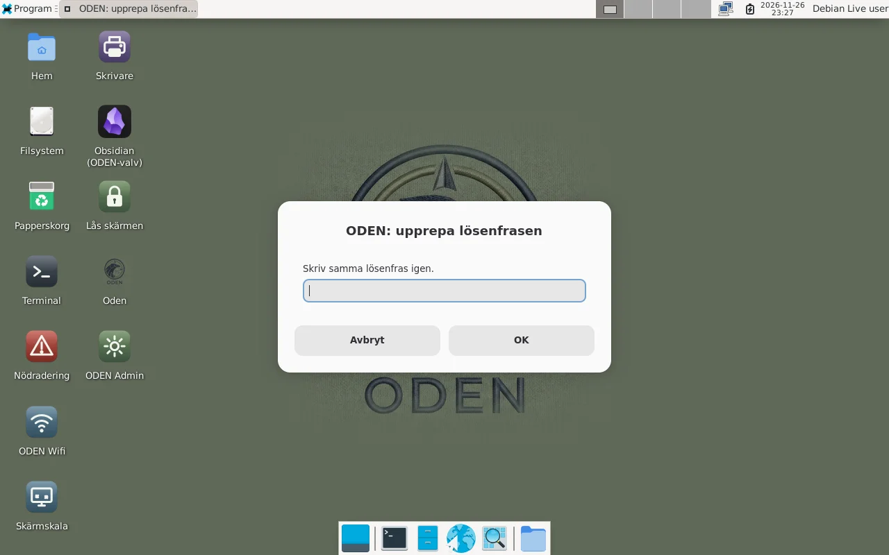
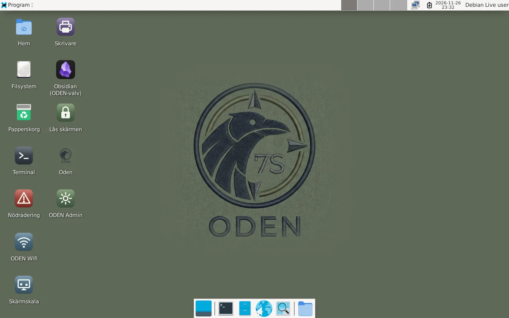
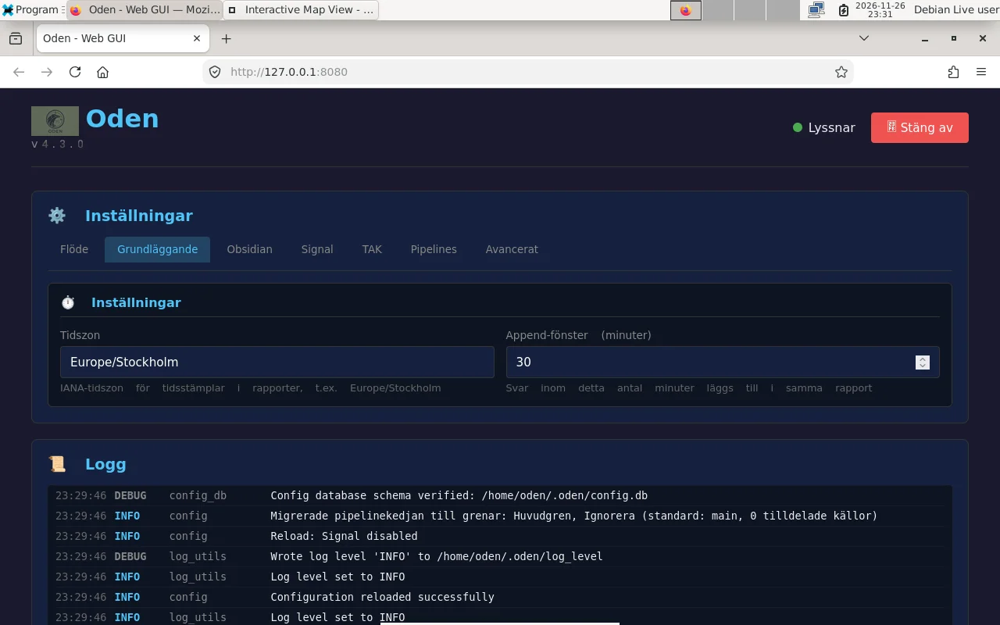
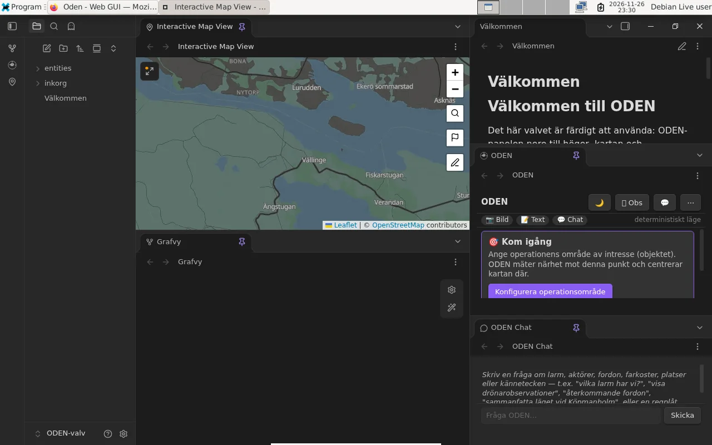

Kom igång
Så skaffar du en sticka och startar den första gången.
Det här behöver du
- En USB-sticka (16 GB räcker för Minimal och Med karta, 32 GB eller mer rekommenderas; Med karta och AI kräver större, se nedan) och en dator med UEFI. 8 GB RAM räcker för grundsystemet, AI kräver 16 GB.
- En ISO-fil från Ladda ner och ett program som bränner den, till exempel balenaEtcher.
- Inget installeras på datorn. Stickan startar sitt eget system och rör inte datorns interna diskar.
Skaffa och bränn stickan
- Välj variant. Minimal hämtar kartorna från nätet en gång vid första start. Med karta har kartorna med och behöver inget nät. Med karta och AI har dessutom lokala AI-modeller, är störst (ca 13,2 GiB) och kräver en större sticka, minst 32 GB (ej provat).
- Kontrollera kontrollsumman (SHA256) mot den som står på nedladdningssidan:
sha256sum fil.iso(Linux/macOS) ellerGet-FileHash fil.iso -Algorithm SHA256(Windows). Stämmer den inte ska filen inte användas. - Bränn med Etcher: välj ISO-filen och stickan och klicka Flash. Allt på stickan raderas.
- Etcher skriver bara ISO-filen. Den krypterade lagringen skapas på det lediga utrymmet vid första start. Du behöver minst 8 GB ledigt utöver ISO-filen (och kartorna i Minimal). Är stickan för liten säger systemet det och sparar ingenting.
Första start

- Sätt i stickan, starta datorn och välj USB i startmenyn (ofta F12, F10 eller Esc).
- Första gången frågar ODEN efter en lösenfras (två gånger). Den krypterar allt du sparar på stickan. Använd bara a–z (inte å, ä, ö), siffror och mellanslag, eftersom tangentbordet vid start inte alltid har svensk layout. Det finns ingen minsta längd, men längre är säkrare. Fyra ord med mellanslag är ett bra val.
- Väljer du Nej på frågan om krypterad lagring sparas inget, och allt är borta när datorn stängs av.
- Skapandet tar en stund och datorn startar sedan om. Håll ner Alt (Mac) eller tryck F12 (PC, ibland F2, F10, F11 eller Esc) tills startmenyn visas, och välj stickan igen (ofta "EFI Boot").
- Bara Minimal: efter omstarten frågar ODEN om kartorna ska hämtas. Välj Hämta nu och låt datorn vara på och ansluten tills det är klart. Avbryts hämtningen fortsätter den där den slutade nästa gång du loggar in. Kartorna fungerar först när hämtningen är klar.
- Vid varje start frågar systemet efter lösenfrasen. Visas "Data inte upplåst" ska du starta om och försöka igen. Oden och Obsidian startar inte förrän lagringen är upplåst.


Glömmer du lösenfrasen går datan inte att få tillbaka. Det finns ingen återställning.

Koppla Signal
- Anslut till wifi eller kabel (nätverksikonen uppe till höger).
- Öppna Oden-gränssnittet. Det startar i webbläsaren på
http://127.0.0.1:8080. - Följ länkningen och skanna QR-koden i Signal-appen på telefonen. Det kräver internet en gång.
- Signal tar bort länkade enheter som varit inaktiva i cirka 30 dagar. Då måste stickan länkas om.

Daglig användning

- Obsidian öppnar ODEN-valvet automatiskt. Kartan visas utan internet (i Minimal först när kartorna har hämtats).
- TAK-servrar och certifikat lägger du in själv i Odens gränssnitt. Inget är förinställt.
- Utan nätverk fungerar analys som vanligt. Mottagning av Signal-meddelanden pausar tills nät finns.
- AI (Ollama) startar bara på datorer med minst 16 GB RAM, och bara om stickan byggts med AI.
- Skärm: på högupplösta skärmar (till exempel MacBook) görs allt dubbelt så stort vid inloggning. Vill du välja själv, tryck
epå "Starta ODEN" i startmenyn och lägg tilloden.scale=1elleroden.scale=2på raden som börjar medlinux. - Pekplatta: rulla med två fingrar (naturlig riktning som på Mac), knacka för klick, två fingrar för högerklick, tre för mittenklick.
Avsluta och byta stick
Stäng av datorn via menyn och dra ur stickan först när datorn är avstängd.
Stickor uppdateras inte: ny version betyder ny stick. Kopiera först ut det du vill behålla (valv, ~/.oden) till ett annat USB-minne och länka Signal på nytt på den nya stickan.
Nödradering
oden-wipe i en terminal förstör nyckeln till den krypterade lagringen och stänger av datorn. Det går inte att ångra. Flashminne kan behålla gamla block, så detta skyddar mot åtkomst med lösenfras, inte mot en laboratorieundersökning.
Vad stickan skyddar
- Skyddas: en förlorad stick, eller en beslagtagen dator när stickan är avstängd (data i vila).
- Skyddas inte: en manipulerad dator (till exempel en keylogger i firmware) eller en stick som tas medan den är igång.
Felsökning
| Symptom | Åtgärd |
|---|---|
| Stickan syns inte i startmenyn | Aktivera UEFI-boot från USB och prova en annan USB-port. |
| Startar inte med Secure Boot på | Stickan använder Debians signerade shim/grub. Prova med Secure Boot av för att utesluta det. |
| Enkel grafik, AI långsam | NVIDIA-drivrutinen är osignerad och laddas inte med Secure Boot på. Stäng av Secure Boot för GPU-AI, annars körs AI på CPU. |
| "Data inte upplåst" | Fel lösenfras. Starta om och ange rätt. |
| Lösenfrasen avvisas | Den innehåller å/ä/ö eller symboler. Använd a–z, 0–9 och mellanslag. |
| "Ingen persistens … för lite ledigt utrymme" | Stickan har för lite plats kvar efter ISO-filen. Använd en större sticka. |
| "En tidigare installation … blev aldrig klar" | Strömavbrott eller utdragen stick. Svara Gör om. Inget data hade sparats. |
| TLS-fel i Signal/TAK | Fel klocka. Anslut till nät och vänta på tidssynkroniseringen. |
| Wifi saknas | Wifi-kortet kan sakna firmware i bilden. Använd kabel. |
| Kartan visas inte | Minimal: kartorna är inte hämtade än, logga in igen. Annars bränn om stickan eller använd en ISO med karta. |
| "Hämtningen misslyckades" | Nätet bröts. Anslut och logga in igen, hämtningen fortsätter. |
| "Kontrollsumman … stämmer inte" | Skadad eller manipulerad nedladdning (filen raderas). Försök igen, och meddela den som byggt stickan om det upprepas. |
| § och < omkastade på Mac-tangentbord | Tryck e i startmenyn och lägg till hid_apple.iso_layout=0 (eller 1) på linux-raden. |
Fler fall finns i felsökningsguiden i repot.